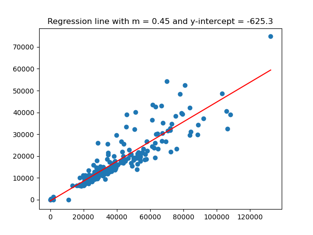
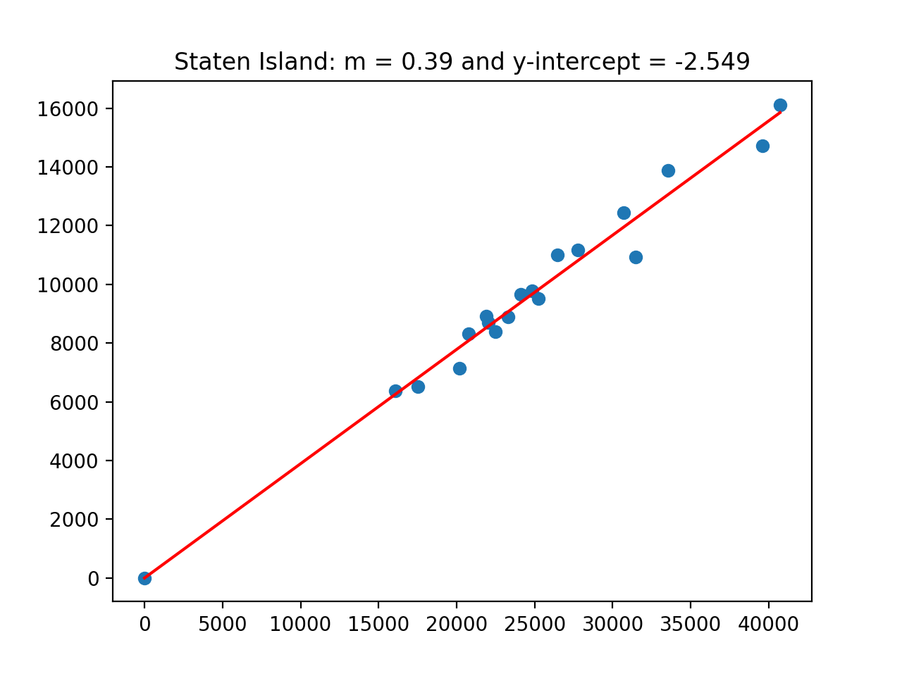
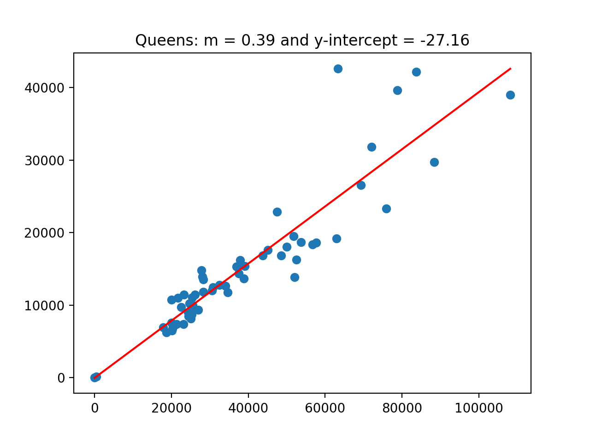
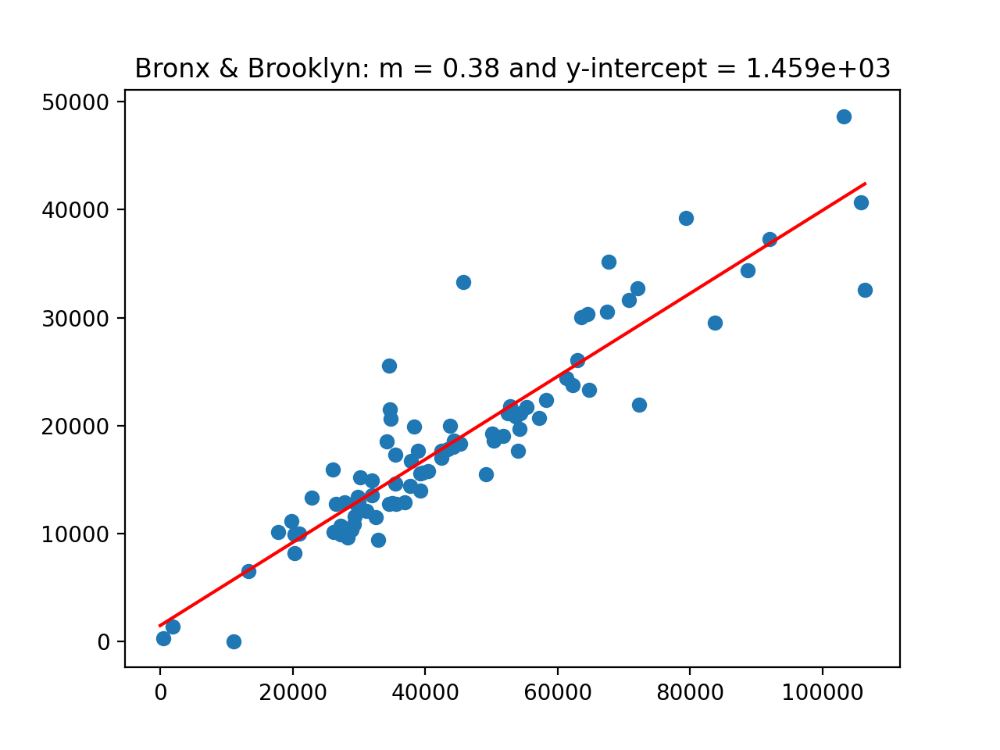

This program builds on the concepts and code developed during lecture and through the reading. Mastery of material is assessed via
Submitted code must be in Python, using only the specified libraries. The autograder expects a .py file and does not accept iPython notebooks.
Also, to receive full credit, the code should be compatible with Python 3.6 (the default for the Gradescope autograders).
To encourage starting early on programs, bonus points are given for early submission. A point a day, up to a total of 3 bonus points (10% of the program grade), are possible. The points are prorated by hour. For example, if you turn in the program 36 hours early, then the bonus poins are: (36 hours/3 days)*3 points = (36 hours/72 hours)*3 points = 1.5 points.
To get full credit for a program, the file must include in the opening comment:
Program 7: Housing Model. Due noon, Thursday, 17 March.
This program continues the analysis from Program 6 of the NYC Housing Database.
NYC Department of City Planning (DCP) Housing Database contains all approved construction and demolition jobs since 2010. Summary information about it are provided via OpenData NYC. A summary, recorded as net housing units, by Neighborhood Tabulation Areas:
In Program 6, we looked at which features are most correlated with the increase in housing units. For this program, we will explore linear models for the dataset, as well as the data separated by borough:




The assignment is broken into the following functions to allow for unit testing:
For example, if the housing and population data files are downloaded (and your functions are imported from a file answer), then a sample run of the program:
Next, let's test out the function that computes by borough. We note that for the default value of
Lastly, we have functions that will compute the error using different loss functions. Let's start with identical columns, to make sure the functions return 0:
Learning Objective: to enhance on statistical skills and understanding via computation linear regression and loss functions.
Available Libraries: pandas, numpy and core Python 3.6+.
make_df(housing_file, pop_file):
This function takes two inputs:
The data in the two files are read and merged into a single DataFrame using housing_file: the name of a CSV file containing housing units from OpenData NYC.
pop_file: the name of a CSV file containing population counts from OpenData NYC.
nta2010 and NTA Code as the keys.
If the total is null or Year differs from 2010, that row is dropped.
The columns the_geom, boro, and nta2010 are dropped, and the resulting DataFrame is returned.
compute_lin_reg(x,y):
This function takes two inputs:
The series are of the same length and contain numeric values only (all null and non-numeric values have been dropped).
The function returns two numeric values: x: a Series containing numeric values.
y: a Series containing numeric values.
theta_0,theta_1 where
computed where theta_1 is the slope (theta_0 is the y-intercept of the best fitting line for x and y.
theta_1 is the slope of the best fitting line for x and y.
r*(std of y)/(std of x)) and theta_0 is the y-intercept ((ave of y) - theta_1*(ave of x)). (see Lecture 12 for details).
compute_boro_lr(df,xcol,ycol,boro=["All"]):
This function takes three inputs:
If df: a DataFrame.
xcol: a name of a column of df.
ycol: a name of a column of df.
boro: a list containing either the names of boroughs or containing only the string 'All'.
boro is ['All'], this function behaves identically to
compute_lin_reg(df[xcol],df[ycol]). Otherwise, the DataFrame is restricted to rows with
Borough in boro and the restricted DataFrame is used, with columns xcol and ycol, to compute a linear regression line, returning two numeric values: theta_0,theta_1 where
computed where theta_1 is the slope (theta_0 is the y-intercept of the best fitting line for x and y.
theta_1 is the slope of the best fitting line for x and y.
r*(std of x)/(std of y)) and theta_0 is the y-intercept ((ave of y) - theta_1*(ave of x)). (see Lecture 12 for details).
MSE_loss(y_actual,y_estimate)::
This function takes two inputs:
The series are of the same length and contain numeric values only (all null and non-numeric values have been dropped). The function returns the mean square error loss function between y_actual: a Series containing numeric values.
y_estimate: a Series containing numeric values.
y_actual and y_estimate (e.g. the mean of the squares of the differences).
RMSE(y_actual,y_estimate)::
This function takes two inputs:
The series are of the same length and contain numeric values only (all null and non-numeric values have been dropped). The function returns the square root of the mean square error loss function between y_actual: a Series containing numeric values.
y_estimate: a Series containing numeric values.
y_actual and y_estimate (e.g. the square root of the mean of the squares of the differences).
compute_error(y_actual,y_estimate,loss_fnc=MSE_loss):
This function takes three inputs:
The series are of the same length and contain numeric values only (all null and non-numeric values have been dropped). The result of computing the y_actual: a Series containing numeric values.
y_estimate: a Series containing numeric values.
loss_fnc: function that takes two numeric series as input parameters and returns a numeric value. It has a default value of MSE_loss.
loss_fnc on the inputs y_actual and
y_estimate is returned.
And the first lines would be:
df = p7.make_df('Housing_Database_by_NTA.csv', 'New_York_City_Population_By_Neighborhood_Tabulation_Areas.csv')
print('The DataFrame:')
print(df.head())
We can use our next function to compute a regression line for the The DataFrame:
OBJECTID boro ... NTA Name Population
1 195 Manhattan ... Stuyvesant Town-Cooper Village 21049
3 166 Bronx ... West Concourse 39282
5 37 Bronx ... Bronxdale 35538
7 14 Brooklyn ... Midwood 52835
9 65 Manhattan ... Yorkville 77942
[5 rows x 32 columns]Population and total columns:
which prints:
theta_0, theta_1 = p7.compute_lin_reg(df['Population'],df['total'])
print(f'The regression line has slope {m} and y-intercept {b}.')
We can check if our function that computes this directly is returning the same values as the sklearn package:
The slope is 0.4536370834220062 and the y-intercept is -625.3358497794688.
which prints:
from sklearn import linear_model
reg = linear_model.LinearRegression()
X = pd.DataFrame(df['Population'])
y = pd.DataFrame(df['total'])
reg.fit(X,y)
print(f'For sklearn, the slope is {reg.coef_[0][0]} with y-intercept: {reg.intercept_[0]}.')
We can plot the original data with the regression line:
For sklearn, the slope is 0.45363708342200604 with y-intercept: -625.3358497794616.
would give the plot:
import matplotlib.pyplot as plt
xes = np.array([0,df['Population'].max()])
yes = theta_1*xes + theta_0
plt.scatter(df['Population'],df['total'])
plt.plot(xes,yes,color='r')
plt.title(f'Regression line with m = {theta_1:{4}.{2}} and y-intercept = {theta_0:{4}.{4}}')
plt.show()boro = ['All'], the function will be identical to compute_lin_reg:
which prints, as expected:
theta_0, theta_1 = p7.compute_boro_lr(df,'Population','total')
print(f'The slope is {theta_1} and the y-intercept is {theta_0}.')
For other values of The slope is 0.4536370834220062 and the y-intercept is -625.3358497794688.boro, it will restrict the data set to those boroughs:
which prints:
si_0, si_1 = p7.compute_boro_lr(df,'Population','total',boro=['Staten Island'])
print(f'SI: The slope is {si_1} and the y-intercept is {si_0}.')
q_0, q_1 = p7.compute_boro_lr(df,'Population','total',boro=['Queens'])
print(f'Queens: The slope is {q_1} and the y-intercept is {q_0}.')
b_0, b_1 = p7.compute_boro_lr(df,'Population','total',boro=['Bronx','Brooklyn'])
print(f'B&B: The slope is {b_1} and the y-intercept is {b_0}.')
(Images corresponding to the various values of SI: The slope is 0.3892292629712051 and the y-intercept is -2.5490753943668096.
Queens: The slope is 0.39404151495697937 and the y-intercept is -27.156488411430473.
B&B: The slope is 0.3849458413516747 and the y-intercept is 1458.8043454328654.
boro = ['All'] are above.)
which prints:
loss = p7.compute_error(df['total'],df['total'])
print(f'The loss is {loss} for total vs total.')
Now, trying the function on our models:
The loss is 0.0 for total vs total.
which prints:
y_est = theta_0 + theta_1*df['Population']
loss = p7.compute_error(df['total'],y_est)
print(f'The loss is {loss} for default loss function: MSE.')
loss = p7.compute_error(df['total'],y_est,loss_fnc= p7.RMSE)
print(f'The loss is {loss} for RMSE.')
The loss is 28443412.98831634 for default loss function: MSE.
The loss is 5333.23663344468 for RMSE.